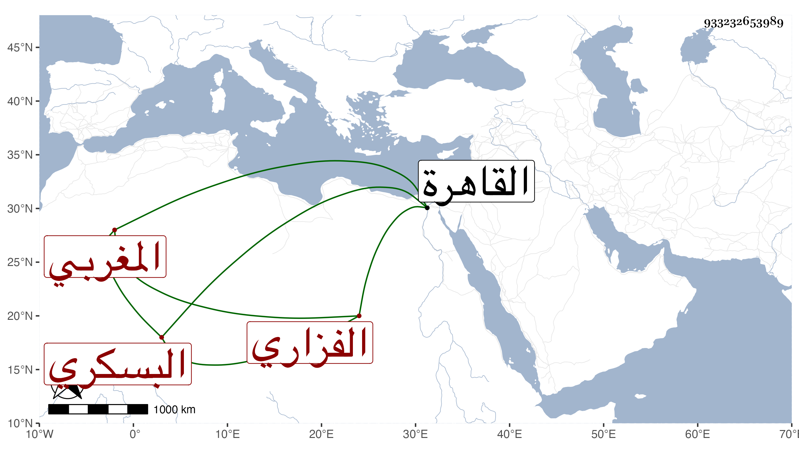

0902Sakhawi.DawLamic.ITO20230111-ara1.EIS1600.933232653989
Biography ID: 933232653989
699
أحمد بن يوسف بن منصور بن فضل بن علي بن أحمد بن حسن الفزاري البسكري المغربي والد ناصر بن مرني الآتي . كان من أمراء العرب صاحب ثروة ومعرفة فغضب السلطان منه فأوقع به ونكبه وأهل بيته في غيبة ولده بالقاهرة وذلك بعد سنة ثلاث وكان ذلك باعثا لولده على الاستقرار بها حتى مات . أفاده شيخنا في ترجمة ابنه من معجمه وأنبائه وأفرده المقريزي في عقوده .
